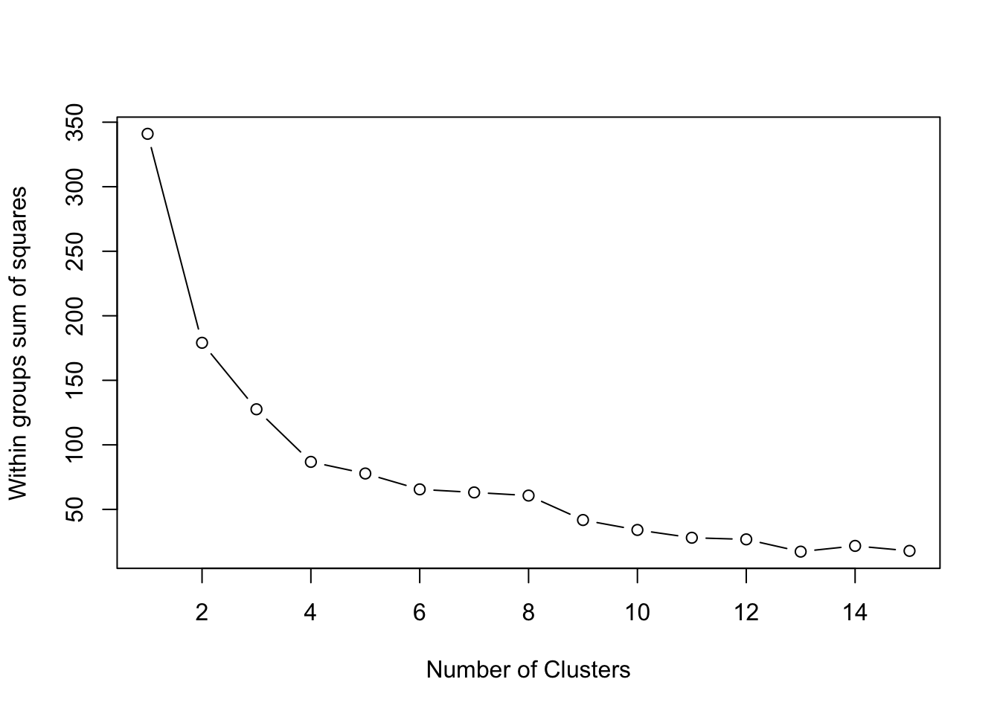
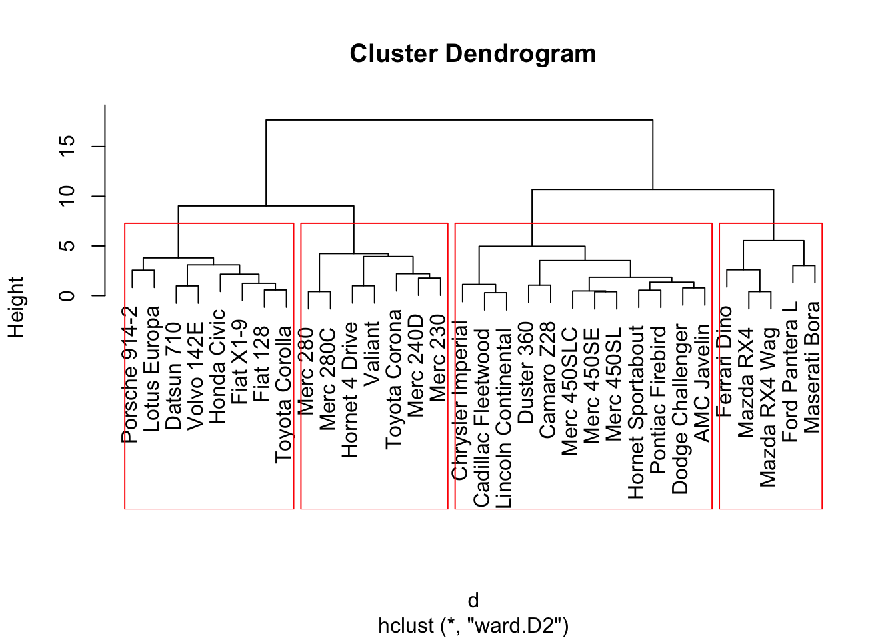
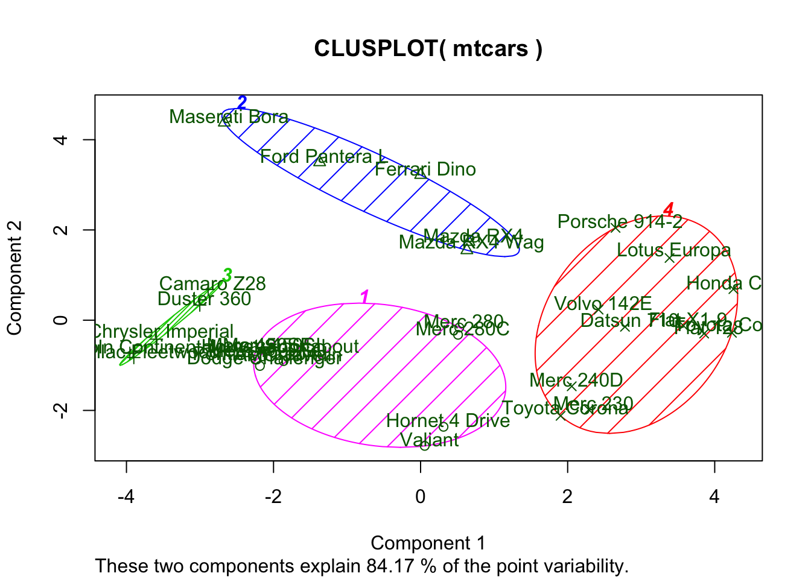

Objectives:
The objective of this document is to give a brief introduction to clustering methods. After completing this tutorial you will be able to:
Let’s load the data:
data("mtcars")summary(mtcars)## mpg cyl disp hp
## Min. :10.40 Min. :4.000 Min. : 71.1 Min. : 52.0
## 1st Qu.:15.43 1st Qu.:4.000 1st Qu.:120.8 1st Qu.: 96.5
## Median :19.20 Median :6.000 Median :196.3 Median :123.0
## Mean :20.09 Mean :6.188 Mean :230.7 Mean :146.7
## 3rd Qu.:22.80 3rd Qu.:8.000 3rd Qu.:326.0 3rd Qu.:180.0
## Max. :33.90 Max. :8.000 Max. :472.0 Max. :335.0
## drat wt qsec vs
## Min. :2.760 Min. :1.513 Min. :14.50 Min. :0.0000
## 1st Qu.:3.080 1st Qu.:2.581 1st Qu.:16.89 1st Qu.:0.0000
## Median :3.695 Median :3.325 Median :17.71 Median :0.0000
## Mean :3.597 Mean :3.217 Mean :17.85 Mean :0.4375
## 3rd Qu.:3.920 3rd Qu.:3.610 3rd Qu.:18.90 3rd Qu.:1.0000
## Max. :4.930 Max. :5.424 Max. :22.90 Max. :1.0000
## am gear carb
## Min. :0.0000 Min. :3.000 Min. :1.000
## 1st Qu.:0.0000 1st Qu.:3.000 1st Qu.:2.000
## Median :0.0000 Median :4.000 Median :2.000
## Mean :0.4062 Mean :3.688 Mean :2.812
## 3rd Qu.:1.0000 3rd Qu.:4.000 3rd Qu.:4.000
## Max. :1.0000 Max. :5.000 Max. :8.000mtcars <- scale(mtcars) # standardize variablesK-means clustering is one of the most popular clustering methods. However, it requires you to specify the number of clusters to extract. With Elbow method, which is basically a plot of the within groups sum of squares by number of clusters extracted can help determine the appropriate number of clusters. You are required to look for a bend in the plot similar to a scree test in PCA.
# Determine number of clusters with Elbow method
wss <- (nrow(mtcars)-1)*sum(apply(mtcars,2,var))
for (i in 2:15) wss[i] <- sum(kmeans(mtcars,
centers=i)$withinss)
plot(1:15, wss, type="b", xlab="Number of Clusters",
ylab="Within groups sum of squares")
Even though, the Elbow method is somewhat subjective, from the plot above we can conclude that k=4 is the appropriate cluster size for this data.
Applying, kmeans clustering is easy, using the kmeans function from stats package, you just need to set the cluster size.
# K-Means Cluster Analysis
fit <- kmeans(mtcars, 4) # 4 cluster solution# get cluster means
aggregate(mtcars, by=list(fit$cluster),FUN=mean)## Group.1 mpg cyl disp hp drat
## 1 1 -0.2639188 0.3429602 -0.05907659 0.7600688 0.44781564
## 2 2 0.1082193 -0.5849321 -0.44867013 -0.6496905 -0.04967936
## 3 3 -0.8363478 1.0148821 1.02385129 0.6924910 -0.88974768
## 4 4 1.3247791 -1.2248578 -1.10626771 -0.9453003 1.09820619
## wt qsec vs am gear carb
## 1 -0.22101115 -1.2494801 -0.8680278 1.1899014 1.2367782 1.4781451
## 2 -0.02346989 1.1854841 1.1160357 -0.8141431 -0.1573201 -0.4145882
## 3 0.90635862 -0.3952280 -0.8680278 -0.8141431 -0.9318192 0.1676779
## 4 -1.20086981 0.3364684 0.8680278 1.1899014 0.7623975 -0.8125929# append cluster assignment
cluster_results <- data.frame(mtcars, fit$cluster)
head(cluster_results)## mpg cyl disp hp drat
## Mazda RX4 0.1508848 -0.1049878 -0.57061982 -0.5350928 0.5675137
## Mazda RX4 Wag 0.1508848 -0.1049878 -0.57061982 -0.5350928 0.5675137
## Datsun 710 0.4495434 -1.2248578 -0.99018209 -0.7830405 0.4739996
## Hornet 4 Drive 0.2172534 -0.1049878 0.22009369 -0.5350928 -0.9661175
## Hornet Sportabout -0.2307345 1.0148821 1.04308123 0.4129422 -0.8351978
## Valiant -0.3302874 -0.1049878 -0.04616698 -0.6080186 -1.5646078
## wt qsec vs am gear
## Mazda RX4 -0.610399567 -0.7771651 -0.8680278 1.1899014 0.4235542
## Mazda RX4 Wag -0.349785269 -0.4637808 -0.8680278 1.1899014 0.4235542
## Datsun 710 -0.917004624 0.4260068 1.1160357 1.1899014 0.4235542
## Hornet 4 Drive -0.002299538 0.8904872 1.1160357 -0.8141431 -0.9318192
## Hornet Sportabout 0.227654255 -0.4637808 -0.8680278 -0.8141431 -0.9318192
## Valiant 0.248094592 1.3269868 1.1160357 -0.8141431 -0.9318192
## carb fit.cluster
## Mazda RX4 0.7352031 1
## Mazda RX4 Wag 0.7352031 1
## Datsun 710 -1.1221521 4
## Hornet 4 Drive -1.1221521 2
## Hornet Sportabout -0.5030337 3
## Valiant -1.1221521 2The agglomerative clustering is also one of the most common type of hierarchical clustering methods. It allows you to visualize the clusters. You decide where to cut the cluster tree based on the fact that how far the clusters are seen from each other.
Again from the stats package, using the hclust function, you can apply the agglomerative clustering. However, you need to create a distance matric first.
d <- dist(mtcars, method = "euclidean") # distance matrix
fit <- hclust(d, method="ward.D2")
plot(fit) # display dendogram
groups <- cutree(fit, k=4) # cut tree into 4 clusters
# draw dendogram with red borders around the 4 clusters
rect.hclust(fit, k=4, border="red")
After visually examining the plot, you decide on the cluster size.
Finally, you may want to visualize the clustering result on the 2-dimentional space based on the first 2 principal components.
# K-Means Clustering with 4 clusters
fit <- kmeans(mtcars, 4)
# Cluster Plot against 1st 2 principal components
library(cluster)
clusplot(mtcars, fit$cluster, color=TRUE, shade=TRUE, labels=2, lines=0)